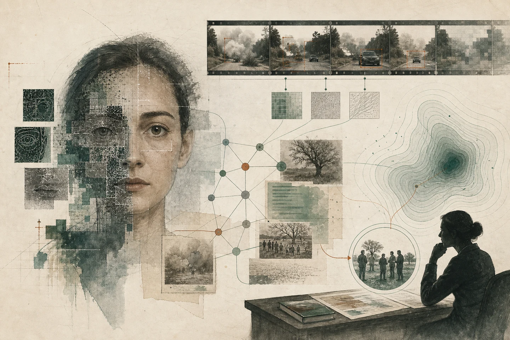

Trustworthy Visual AI for Online and Public Safety
A BMVC 2026 workshop bringing together visual-media forensics, multimodal safety, robust evaluation and the realities of online and public-safety practice.
Research framework
From media evidence to operational safety
- 01DetectSynthetic and manipulated media
- 02UnderstandHarm, target, intent and context
- 03AssureRobustness, evidence and uncertainty
- 04ProtectOperational safety workflows
Draft status TrustVis timing, programme, speakers and submission details remain provisional; BMVC confirms an in-person workshop day at Lancaster Town Hall on 26 November.
About TrustVis
Visual AI is becoming both a safety tool and a safety risk.
Generative models can create convincing images, video and multimodal narratives at scale. The same capabilities that support creativity also amplify deepfakes, manipulated evidence, non-consensual imagery, fraud, coordinated hate and misleading visual content.
TrustVis convenes researchers across computer vision, multimodal AI, AI safety, cybersecurity and social computing. The workshop asks how technical advances can become systems that are robust, explainable, auditable and useful in real safety workflows.
The emphasis is not benchmark accuracy alone, but evidence that remains dependable under distribution shift, adaptive misuse and changing social context.
Research scope
Technical, benchmark, systems and interdisciplinary contributions are welcome.
-
01
Deepfake and synthetic-media forensics
Open-world detection, localisation, attribution and explanation across image, video and audio-visual media.
-
02
Multimodal media integrity
Vision-language forensics, cross-modal inconsistency, provenance and verification of image–text–video narratives.
-
03
Harmful-content understanding
Context-aware recognition of harmful memes, coded hate, abusive visual narratives, targets and intent.
-
04
Agentic visual-AI safety
Attack surfaces, guardrails and safe tool use for agents that perceive, generate, retrieve or act on visual information.
-
05
Robustness, uncertainty and assurance
Adversarial and out-of-distribution robustness, calibration, selective prediction, verification and reliability.
-
06
Provenance, benchmarks and deployment
Datasets, red-team protocols, authenticity signals and human-in-the-loop evaluation for operational safety.
Preliminary programme
The timetable is a working draft and will be updated after paper selection and speaker confirmation.
| Time | Format | Session and details |
|---|---|---|
| Welcome | Opening remarksWorkshop framing, safety challenges and community goals. | |
| Invited talk | Deepfake detection and media forensicsSpeaker and talk title to be announced. | |
| Oral session | Deepfake and AIGC detectionThree selected papers; titles and authors to follow. | |
| Exchange | Coffee, posters and demosInformal discussion with authors and demonstrators. | |
| Invited talk | Harmful content and online safety at scaleSpeaker and talk title to be announced. | |
| Oral session | Multimodal safety and harmful contentThree selected papers; titles and authors to follow. | |
| Closing | Awards and closing discussionWorkshop reflections and next-step community discussion. |
Invited speakers
The supplied workshop draft names one prospective speaker. Participation and talk titles remain subject to organiser confirmation.
-
Prof Roy Ka-Wei Lee
Associate Professor · Singapore University of Technology and Design
Roy Ka-Wei Lee is Associate Professor, Associate Head of Pillar (Research), and Cheng Tsang Man Early Career Chair Professor in SUTD’s Information Systems Technology and Design Pillar. He leads the Social AI Studio and is an Adjunct Senior Scientist at Singapore’s Centre for Advanced Technologies in Online Safety. His research spans machine learning, social computing, computational social science and natural language processing, with a focus on hate speech, misinformation and other online harms.
Official SUTD profile -
Media forensics
Speaker and talk title to be confirmed
Call for papers
We invite research papers, benchmark and dataset contributions, systems studies and interdisciplinary work aligned with the workshop scope.
Submissions that evaluate generalisation, expose failure modes, quantify uncertainty or connect model outputs to operational safety decisions are particularly encouraged.
Open the TrustVis submission site to sign in and view the author console. The submission deadline is 12 September 2026 at 23:59 AoE (UTC−12). Paper format, page limits and review criteria will be added here when confirmed.
Responsible participation
Work involving harmful imagery should minimise unnecessary exposure, clearly state ethical safeguards and follow BMVC conduct requirements. Reviewing is intended to be double-blind and inclusive; final author instructions will confirm the policy.
Organising committee
Expertise across computer vision, multimodal learning, formal assurance and robust AI.
-
Dr Guangliang Cheng
Reader (Associate Professor) · University of Liverpool
Deep learning and computer vision, with a focus on AI safety and security and explainable, trustworthy deepfake detection.
-
Dr Zeyu Fu
Lecturer in Computer Vision and Machine Learning · University of Exeter
Multimodal AI, computer vision and machine learning for healthcare, environmental science and social research; lead of the Multimodal Intelligence Lab.
-
Dr Jianbo Jiao
Associate Professor in Computer Vision and Machine Learning · University of Birmingham
Representation learning from limited supervision and multimodal data in the open world; lead of the MIx research group.
-
Prof Xiaowei Huang
Professor of Computer Science · University of Liverpool
Trustworthy AI, with expertise in verification, explainability, safety and security across machine learning, formal methods and robotics.
Lancaster · 26 November
BMVC 2026 schedules its workshops in person at Lancaster Town Hall on 26 November. The TrustVis half-day slot and detailed timetable remain subject to organiser confirmation.
- Conference
- BMVC 2026 main site
Planning notes
What is settled, and what will be updated as the workshop develops.
- Is the programme final?
- No. Session times are preliminary; invited-talk details and selected papers will be added after confirmation.
- What kinds of work fit TrustVis?
- Research papers, benchmarks and datasets, systems studies, and interdisciplinary work connected to trustworthy visual AI and safety practice.
- How will submissions be reviewed?
- Double-blind review is intended. The final author instructions will confirm format, page limits, criteria and archival status. The submission deadline is 23:59 AoE (UTC−12).
- Where should questions go?
- Email Guangliang.Cheng@liverpool.ac.uk. Submission and programme updates will also appear on this page.